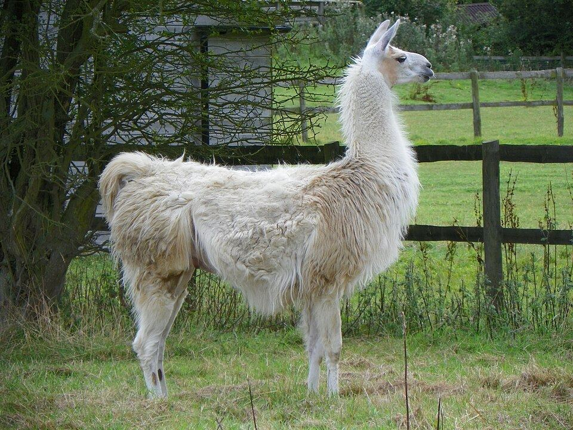
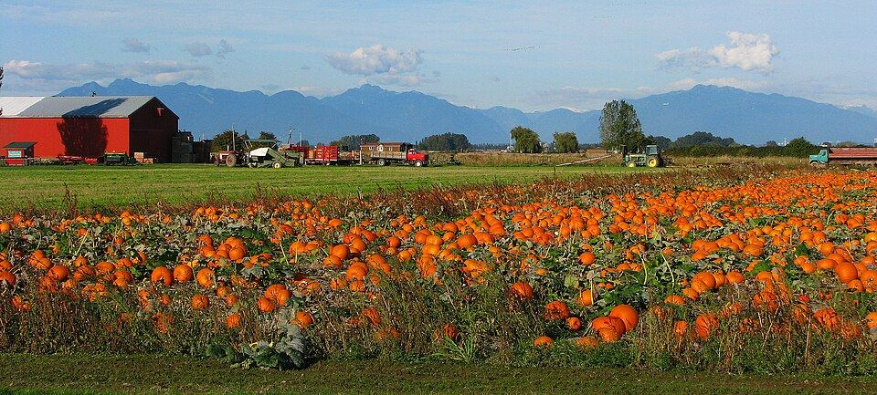
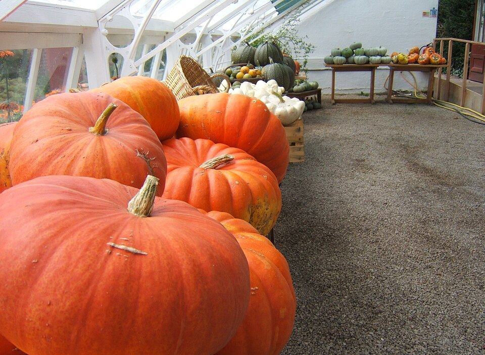
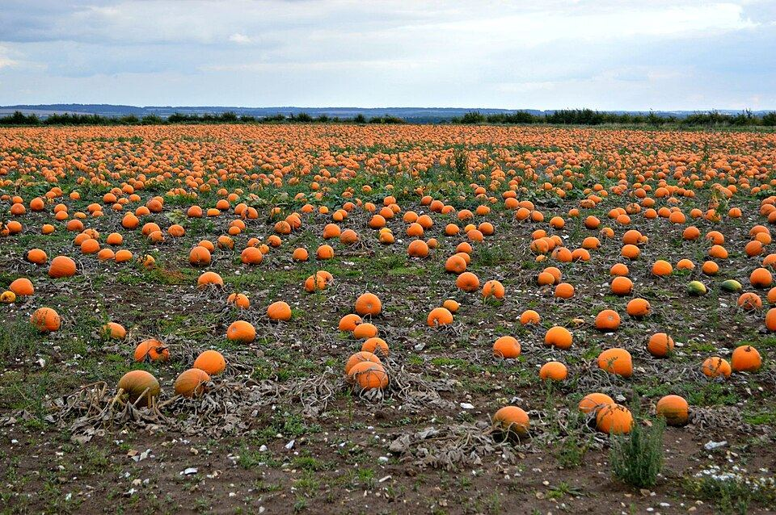

Who's coming?
Count everyone in the car and see what to bring to the gate.
$24
at the gate, card or cash. Pumpkins, gourds and straw bales are priced separately.
Say hi to
llamasalpacasdonkeysgoatspot-bellied pigspeacocksand more
A real working farm, so the animals roam where they live. Bring a camera.

Every pumpkin color



Orange, white, grey and green. Plus gourds, squash, corn bundles and straw bales for decorating your porch.
Summer parties
Birthdays, graduations and field trips. A picnic pavilion, restrooms and the animals. Dates go fast.